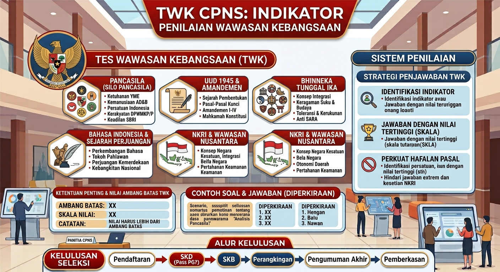

Dari berbagai rentetan topik wawasan kebangsaan yang sering menjegal kelulusan peserta CPNS, materi tentang Hak Asasi Manusia (HAM) kerap kali hadir bak sebuah jebakan hukum yang samar. Mengapa demikian? Berdasarkan ulasan menyeluruh di Bedah Tuntas Materi CPNS 2026, BKN sangat jarang menanyakan definisi teoritis dari HAM itu sendiri. Justru, kamu akan disodorkan pada narasi kasus-kasus kriminal dan diminta menentukan masuk ke dalam penggolongan HAM apakah kasus tersebut.
Sering bingung apakah sebuah kasus pengeroyokan masuk kategori pelanggaran HAM berat atau HAM ringan? Wajar, karena garis batasnya terkadang terlihat sangat tipis. Namun, jika kamu sudah memahami esensi penalaran melalui Cara Jitu Menjawab Soal HOTS TWK Tanpa Menghafal, kamu akan tahu bahwa selalu ada "kata kunci" rahasia di setiap paragraf soal BKN. Mari kita lucuti trik-trik untuk membedakan kasus pelanggaran HAM dengan kecepatan kilat!
Memahami 3 Sifat Dasar HAM
Sebelum kita loncat ke bedah kasus, ada 3 sifat dasar HAM yang sering muncul di pilihan ganda. Jangan sampai kamu tertukar saat soal menanyakan karakteristik HAM yang melekat pada manusia:
- Universal (Menyeluruh): Berlaku untuk semua orang di seluruh dunia tanpa memandang ras, agama, suku, atau gender.
- Hakiki (Kesejatian): Sudah ada sejak manusia berada di dalam kandungan hingga ia lahir ke dunia. Tidak diciptakan oleh negara atau hukum.
- Tidak Dapat Dicabut (Utuh): Hak asasi tidak bisa diserahkan kepada orang lain atau dibeli, dan tidak bisa dihilangkan secara paksa.
Pemahaman sifat dasar ini sangat erat kaitannya dengan pengamalan yang kita bahas tuntas pada Trik Menjawab Pengamalan Sila ke-2 Pancasila (Kemanusiaan yang Adil dan Beradab).
Trik Mutlak: Beda Pelanggaran HAM Berat & Ringan
Di sinilah BKN sering menaruh jebakan mautnya. Soal cerita TWK sering memintamu mengklasifikasikan apakah suatu tragedi adalah pelanggaran HAM Berat atau HAM Ringan. Jangan main tebak-tebakan, gunakan rumus *keyword* ini:
1. Pelanggaran HAM Berat
Hanya ada DUA kategori kejahatan yang masuk dalam Pelanggaran HAM Berat menurut UU No. 26 Tahun 2000. Jika kasusnya sangat terstruktur, masif, dan bertujuan melenyapkan nyawa, maka itu HAM Berat. Ingat dua istilah ini:
- Kejahatan Genosida: Upaya memusnahkan atau menghancurkan seluruh atau sebagian kelompok bangsa, ras, etnis, atau agama. Contoh soal: Pembersihan etnis Rohingya atau tragedi Holocaust.
- Kejahatan terhadap Kemanusiaan: Serangan yang meluas dan sistematis yang ditujukan secara langsung terhadap penduduk sipil. Contoh soal: Kasus Trisakti, Tragedi Semanggi I dan II, Peristiwa Tanjung Priok, atau penculikan aktivis.
2. Pelanggaran HAM Ringan
Jika kejahatannya tidak memiliki unsur "pembantaian sistematis" atau tidak mengancam nyawa secara masif, maka masukkan ke dalam HAM Ringan. Jangan terkecoh! Kasus pembunuhan biasa (kriminal murni) yang dilakukan oleh perampok kepada korbannya bukanlah pelanggaran HAM berat di mata konstitusi CPNS, melainkan tindak pidana umum (HAM ringan dalam skala negara).
Contoh soal HAM ringan: Pencemaran nama baik, penghinaan rasial di media sosial, perundungan (bullying) di sekolah, pelarangan berekspresi, atau pencurian. Jika kamu ragu, pastikan kamu selalu merujuk pada landasan konstitusional di Trik Menjawab Soal UUD 1945 (Pasal 28 tentang HAM).
Jebakan Lembaga Perlindungan HAM
Selain jenis kasusnya, kamu juga sering diuji tentang wewenang lembaga yang mengurusinya. Banyak peserta terjebak antara tugas Komnas HAM dan Pengadilan HAM.
Komnas HAM (Komisi Nasional Hak Asasi Manusia) fungsinya hanyalah melakukan pengkajian, penelitian, penyuluhan, pemantauan, dan mediasi. Jika ada soal yang menyatakan bahwa "Komnas HAM berhak menjatuhkan hukuman penjara", langsung coret opsi tersebut! Komnas HAM tidak memiliki palu hakim.
Yang berhak memeriksa, mengadili, dan memutus perkara pelanggaran hak asasi manusia yang berat hanyalah Pengadilan HAM.
Eksekusi Poin TWK Lewat Simulasi
Menghafal perbedaan Genosida dan kejahatan kemanusiaan dari artikel ini saja tidak akan cukup membuat jarimu lincah di hari-H. Saat berhadapan dengan soal sepanjang tiga paragraf dan timer CAT yang terus menyusut, otakmu butuh refleks. Oleh karena itu, jangan bosan-bosan untuk melatih kecepatan bacamu melalui *drill* soal harian yang disarankan dalam Panduan Lengkap Latihan CAT CPNS 2026.
Jadikan materi HAM ini sebagai salah satu materi penambang poin gratis buatmu. Gabungkan trik identifikasi kasus di atas dengan pola strategi pengerjaan pada Panduan Utama Lolos SKD CPNS 2026, dan pastikan dirimu menjadi ahli taktik yang tak gampang goyah oleh jebakan pembuat soal BKN.
Berani Uji Pemahaman TWK Kamu Hari Ini?
Sudah tahu kan bedanya HAM berat dan HAM ringan? Jangan biarkan trik jembatan keledai ini menguap begitu saja! Ayo, jajal insting analisismu dalam membongkar soal cerita (HOTS) TWK yang penuh narasi panjang lewat simulasi Tryout CAT Mivida secara gratis sekarang juga!
Latihan Soal HAM TWK CPNSRekomendasi Bacaan TWK dari MiVida
Tanya Jawab Seputar Soal HAM TWK (FAQ)
Apa itu materi HAM di TWK CPNS?
Materi HAM (Hak Asasi Manusia) dalam tes wawasan kebangsaan dirancang untuk menguji pemahaman peserta tentang konsep dasar hakiki manusia, penggolongan pelanggaran HAM berat dan ringan, serta instrumen perlindungan HAM yang berlaku di konstitusi Indonesia (seperti Komnas HAM dan Pengadilan HAM).
Bagaimana cara membedakan pelanggaran HAM berat dan ringan?
Fokuslah pada skala dan dampaknya. Pelanggaran HAM berat adalah kejahatan yang mengancam nyawa secara langsung dan dilakukan secara sistematis, terstruktur, atau masif (hanya ada dua: Genosida dan Kejahatan terhadap Kemanusiaan). Sedangkan pelanggaran HAM ringan adalah kasus yang tidak mengancam nyawa secara masif (seperti pencemaran nama baik, penghinaan rasial, atau pencurian biasa).
Apa wewenang utama Komnas HAM?
Komnas HAM adalah lembaga independen yang berwenang melakukan penyelidikan, penyuluhan, pemantauan, dan mediasi terkait dugaan kasus HAM. Ingat jebakannya: Komnas HAM sama sekali tidak berhak "mengadili" atau "menjatuhkan hukuman penjara" kepada pelaku, karena ranah vonis tersebut adalah wewenang murni dari Pengadilan HAM.